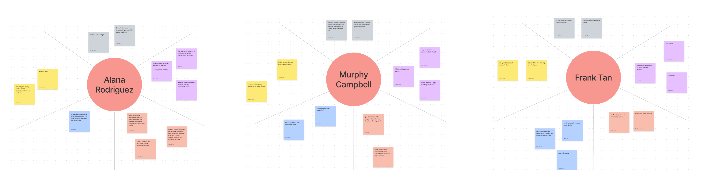

Interactive Dashboards
Spring 2022
Team Members: Nora Wai, Sherly Quezada, Hao Wei Fu, Annie Woo
Technologies: Figma
Jump to Final Product
Context
The dashboards are to be used in an high school classroom of 20 students where teams of students each take turns giving live demonstrations of their tabletop game prototypes.
Student listeners will be using the interactive dashboard to give live feedback as teams of students present their work. The instructor will be using the dashboard to monitor feedback from the student listeners.
Persona Analysis
We had three persona groups based on the main stakeholders of the project: student listeners, student presenters, and instructors. Using our three personas, we created an empathy map for each persona and used these maps to perform an need analysis to determine the most important goals and needs for each person. When doing so, we noticed where they overlapped and differentiated to set overarching goals for all of our designs.

Data Analysis
With the needs of our presenters in mind, we moved on to identifying what type of data was important for the dashboard. We tagged the components of the data we thought were important for each stakeholder.
Concept Sketches
Greyscale to Color
For our initial protoypes, we wanted to make our dashboards easily readable while keeping all the necessary components.
We included feedback tags in the note sections to make them more organized, a way to rate the presenter through star ratings, and presentation information
so the user can clearly see which project they are currently submitting feedback for.
The instructor dashboard also includes multiple ways to monitor student feedback
from the student listener, such as a real-time response frequency counter bar graph that the instructor can use to track participation and engagement, a section where they
can see student listeners' answers to the presenters' questions, and a way to see live star rating feedback from listeners, while the listener dashboard has a dedicated section to where they can answer student presenter questions about their game.
Critique and Revisions
From our class critique, we found that our dashboard design was too dull, question answers may be crowded, and student names would be too long to place on our data graph. As a result, we made the following revisions:
- Changed color palette to be brighter and added animations, making the dashboard more fun to appeal to students
- Reorganized the components of the dashboard to make the most important aspects easier for the clients to find and use
- Replaced student names on the data graph with personal icons, where student names could be viewed by hovering over them
Final Product
Instructor Dashboard
For the instructor dashboard, we provided tools so the instructor can provide and keep track of feedback, while also tracking student participation and responses.
We used an expanding design for the notes, questions, and feedback components to maximize space and make it easy to see all the parts upfront.
Try it Out!
Listener Dashboard
 Many features of our listener dashboard are the same as in the Instructor dashboard, such as the presentation information, ratings,
and feedback tags. We also added presentation questions as a means for student listeners to answer
presenter questions, a participation counter so they could track their participation levels, and a pop-up after 2 minutes of inactivity to
keep the presenter focused (due to constraints with Figma, there is only a 30 second threshold).
Many features of our listener dashboard are the same as in the Instructor dashboard, such as the presentation information, ratings,
and feedback tags. We also added presentation questions as a means for student listeners to answer
presenter questions, a participation counter so they could track their participation levels, and a pop-up after 2 minutes of inactivity to
keep the presenter focused (due to constraints with Figma, there is only a 30 second threshold).
Try it Out!
Reflection
This unit taught me the significance of creating readable data. Even if a dashboard included all the necessary information, if it’s difficult to read or not immersive, then the dashboard has lost its use. In creating our designs, we needed to ensure each part was clear, intuitive, and engaging for the user. Animations really helped us out here– even though our animations were subtle, they served to make our dashboard more lively and enjoyable. Additionally, even though there was only one user for each design, I learned that multiple people would be impacted by what we included. For example, instructors needed to keep track of and give feedback, but the delivery of this feedback had to meet the needs of student presenters and listeners as well.